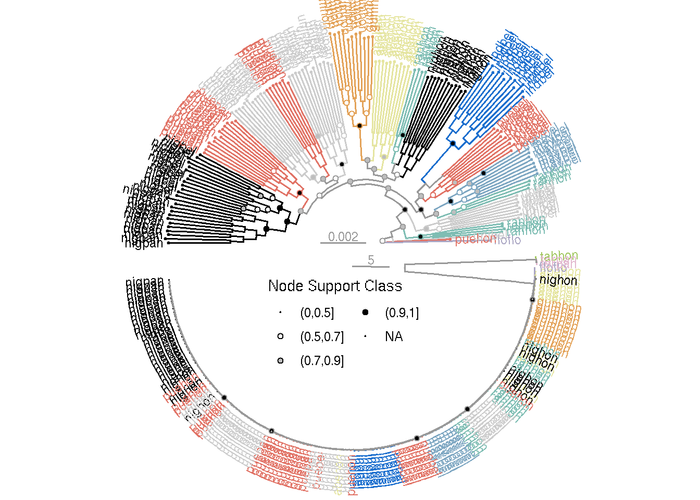

31 Supplementary Figure 9
31.1 Summary
This is the accessory documentation of Supplementary Figure 9.
The Figure can be recreated by running the R script plot_SF9.R:
cd $BASE_DIR
Rscript --vanilla R/fig/plot_SF9.R 31.2 Details of plot_SF9.R
In the following, the individual steps of the R script are documented. It is an executable R script that depends on the accessory R package GenomicOriginsScripts, as well as on the packages ggtext, hypoimg, paletteer, patchwork and prismatic.
31.2.1 Config
The scripts start with a header that contains copy & paste templates to execute or debug the script:
#!/usr/bin/env Rscript
# run from terminal:
# Rscript --vanilla R/fig/plot_SF9.R ~/work/puebla_lab/stash/hyp155_n_0.33_mac4_5kb.raxml.support.bs-tbe
# ===============================================================
# This script produces Suppl. Figure 9 of the study "Ancestral variation,
# hybridization and modularity fuel a marine radiation"
# by Hench, Helmkampf, McMillan and Puebla
# ---------------------------------------------------------------
# ===============================================================
# args <- c("2_analysis/raxml/hyp155_n_0.33_mac4_5kb.raxml.support.bs-tbe",
# "2_analysis/raxml/RAxML_bipartitions.hypS-h_n_0.33_mac6_10kb")
# script_name <- "R/fig/plot_SF9.R"The next section processes the input from the command line.
It stores the arguments in the vector args.
The needed R packages are loaded and the script name and the current working directory are stored inside variables (script_name, plot_comment).
This information will later be written into the meta data of the figure to help us tracing back the scripts that created the figures in the future.
Then we drop all the imported information besides the arguments following the script name and print the information to the terminal.
args <- commandArgs(trailingOnly = FALSE)
# setup -----------------------
library(GenomicOriginsScripts)
library(hypoimg)
library(hypogen)
library(ape)
library(ggtree)
cat('\n')
script_name <- args[5] %>%
str_remove(., '--file=')
plot_comment <- script_name %>%
str_c('mother-script = ', getwd(), '/', .)
args <- process_input(script_name, args)#> ── Script: scripts/plot_SF9.R ────────────────────────────────────────────
#> Parameters read:
#> ★ 1: 2_analysis/raxml/hyp155_n_0.33_mac4_5kb.raxml.support.bs-tbe
#> ★ 2: 2_analysis/raxml/RAxML_bipartitions.hypS-h_n_0.33_mac6_10kb
#> ─────────────────────────────────────────── /current/working/directory ──The directory containing the hybridization data is received and stored in a variable.
# config -----------------------
tree_file <- as.character(args[1])
raxml_tree <- read.tree(tree_file)
raxml_tree_rooted <- root(phy = raxml_tree, outgroup="PL17_160floflo")
clr_neutral <- rgb(.6, .6, .6)
lyout <- 'circular'
lab2spec <- function(label){
x <- str_sub(label, start = -6, end = -4) %>% str_remove(.,"[0-9.]{1,3}$") %>% str_remove(.," ")
ifelse(x == "",'ungrouped', x)
}
raxml_tree_rooted_grouped <- groupClade(raxml_tree_rooted,
.node = c(298, 302, 187, 179, 171, 159,
193, 204, 201, 222, 219, 209,
284, 278, 268, 230, 242),
group_name = "clade")
clade2spec <- c( `0` = "none", `1` = "ran", `2` = "uni", `3` = "ran", `4` = "may",
`5` = "pue", `6` = "ind", `7` = "nig", `8` = "nig", `9` = "ran",
`10` = "abe", `11` = "abe", `12` = "gum", `13` = "uni", `14` = "pue",
`15` = "uni", `16` = "pue", `17` = "nig")
raxml_data <- ggtree(raxml_tree_rooted_grouped, layout = lyout) %>%
# ggtree::rotate(200) %>%
.$data %>%
mutate(spec = ifelse(isTip, str_sub(label, -6, -4), "ungrouped"),
support = as.numeric(label),
support_class = cut(as.numeric(label), c(0,.5,.7,.9,1)) %>%
as.character() %>% factor(levels = c("(0,0.5]", "(0.5,0.7]", "(0.7,0.9]", "(0.9,1]"))
)
p_tree <- (open_tree(
ggtree(raxml_data, layout = lyout,
aes(color = ifelse(clade == 0,
lab2spec(label),
clade2spec[as.character(clade)]))) %>%
ggtree::rotate(200), 180)) +
geom_tippoint(size = .4) +
geom_tiplab2(aes(color = lab2spec(label),
label = str_sub(
label, -6, -1)),
size = 3, hjust = -.1)+
ggtree::geom_treescale(width = .002,
x = -.0007, y = 155,
offset = -3,fontsize = 3,
color = clr_neutral) +
xlim(c(-.0007,.0092)) +
ggtree::geom_nodepoint(aes(fill = support_class, size = support_class),
shape = 21) +
scale_color_manual(values = c(ungrouped = clr_neutral,
GenomicOriginsScripts::clr2),
guide = FALSE) +
scale_fill_manual(values = c(`(0,0.5]` = "transparent",
`(0.5,0.7]` = "white",
`(0.7,0.9]` = "gray",
`(0.9,1]` = "black"),
drop = FALSE) +
scale_size_manual(values = c(`(0,0.5]` = 0,
`(0.5,0.7]` = 1.5,
`(0.7,0.9]` = 1.5,
`(0.9,1]` = 1.5),
na.value = 0,
drop = FALSE) +
guides(fill = guide_legend(title = "Node Support Class", title.position = "top", ncol = 2),
size = guide_legend(title = "Node Support Class",title.position = "top", ncol = 2)) +
theme_void()
tree_s <- read.tree("~/work/puebla_lab/stash/RAxML_bipartitions.hypS-h_n_0.33_mac6_10kb")
# get_tree_data <- function(tree, lab){ggtree(tree, layout = "circular") %>% .$data %>% select(node, label) %>% set_names(nm = c("node", lab))}
tree_s_rooted <- root(tree_s, outgroup = c("28393torpan", "s_tort_3torpan", "20478tabhon" ))
tree_s_mid <- phangorn::midpoint(tree_s_rooted)
tree_s_data <- open_tree(ggtree(tree_s_mid, layout = "circular"), 180) %>%
.$data %>%
mutate(spec = ifelse(isTip, str_sub(label, -6, -4), "ungrouped"),
support = as.numeric(label)/100,
support_class = cut(as.numeric(label), c(0,.5,.7,.9,1)) %>%
as.character() %>% factor(levels = c("(0,0.5]", "(0.5,0.7]", "(0.7,0.9]", "(0.9,1]")))
p_s_tree <- (rotate_tree(open_tree(ggtree(tree_s_data, aes(color = spec),
layout = "circular") %>%
rotate(node = 159),
180),
183) )+
geom_tiplab2(aes(label = str_sub(label, -6, -1)),
size = 3, offset = .5) +
geom_nodepoint(aes(fill = support_class, size = support_class),
shape = 21) +
ggtree::geom_treescale(width = 5,
x = -7, y = 155,
offset = 5, fontsize = 3,
color = clr_neutral) +
scale_color_manual(values = c(ungrouped = clr_neutral,
GenomicOriginsScripts::clr2),
guide = FALSE) +
scale_fill_manual(values = c(`(0,0.5]` = "transparent",
`(0.5,0.7]` = "white",
`(0.7,0.9]` = "gray",
`(0.9,1]` = "black"),
drop = FALSE) +
scale_size_manual(values = c(`(0,0.5]` = 0,
`(0.5,0.7]` = 1.5,
`(0.7,0.9]` = 1.5,
`(0.9,1]` = 1.5),
na.value = 0,
drop = FALSE) +
theme_void()
y_sep <- .05
x_shift <- -.03
p_single <- ggplot() +
coord_equal(xlim = c(0, .93),
ylim = c(-.01, .54),
expand = 0) +
# annotation_custom(grob = ggplotGrob(p_tree + theme(legend.position = "none")),
# ymin = -.575, ymax = .575,
# xmin = -.075, xmax = 1.075) +
annotation_custom(grob = ggplotGrob(p_tree + theme(legend.position = "none")),
ymin = -.6 + (.5 * y_sep), ymax = .6 + (.5 * y_sep),
xmin = -.1, xmax = 1.1) +
annotation_custom(grob = cowplot::get_legend(p_tree),
ymin = .35, ymax = .54,
xmin = 0, xmax = .2) +
theme_void()scl <- 1.5
hypo_save(plot = p_single,
filename = "figures/SFY3_single.pdf",
width = 7.5 * scl,
height = 4 * scl,
device = cairo_pdf,
bg = "transparent",
comment = plot_comment)p_done <- ggplot() +
coord_equal(xlim = c(0, .93),
ylim = c(-.52, .54),
expand = 0) +
# annotation_custom(grob = ggplotGrob(p_tree + theme(legend.position = "none")),
# ymin = -.575, ymax = .575,
# xmin = -.075, xmax = 1.075) +
annotation_custom(grob = ggplotGrob(p_tree + theme(legend.position = "none")),
ymin = -.6 + (.5 * y_sep), ymax = .6 + (.5 * y_sep),
xmin = -.1, xmax = 1.1) +
annotation_custom(grob = ggplotGrob(p_s_tree + theme(legend.position = "none")),
ymin = -.6 - (.5 * y_sep), ymax = .6 - (.5 * y_sep),
xmin = 0 + x_shift, xmax = 1 + x_shift) +
annotation_custom(grob = cowplot::get_legend(p_tree),
ymin = -.2, ymax = -.1,
xmin = 0, xmax = .907) +
theme_void()p_done
scl <- 1.5
hypo_save(plot = p_done,
filename = "figures/SF9.pdf",
width = 7.5 * scl,
height = 8 * scl,
device = cairo_pdf,
bg = "transparent",
comment = plot_comment)